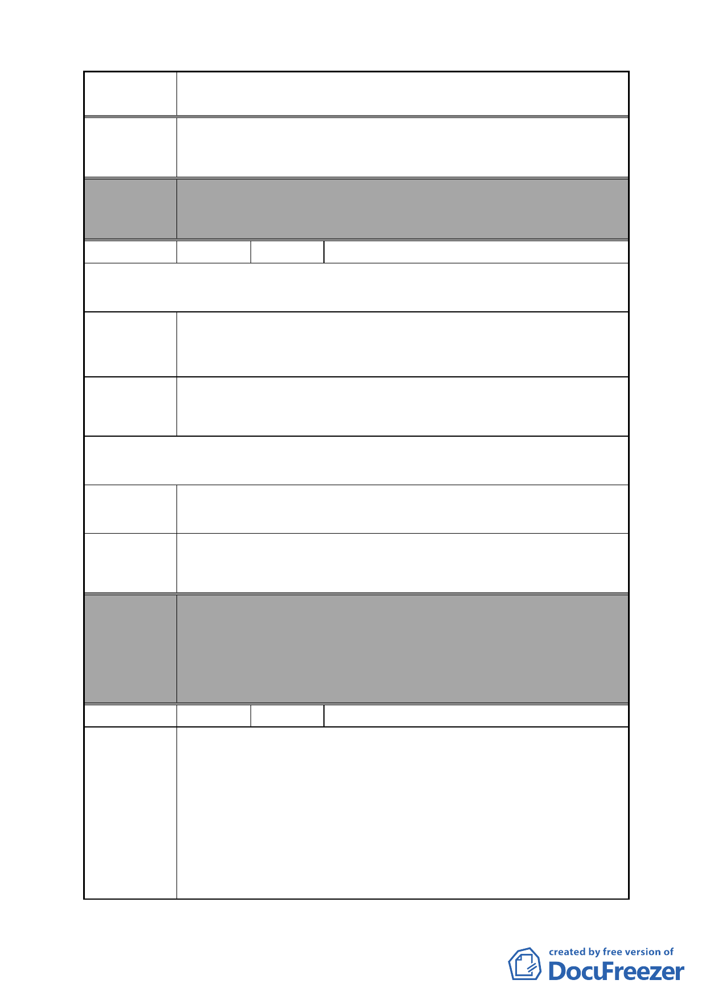

案 名 變更臺北市南港區鐵路地下化沿線土地主要計畫案
請將 C 區變更為住商混合區，不興建大型公園。
建議辦法
委員會
決議
編號
本案除文字誤繕應再作修正外，其餘依市府本次會議所送修
正計畫書內容通過。
24 陳情人 大華鋼鐵機械股份有限公司陳傳金
第一次陳情（97.11.25.）
陳情理由
建議辦法
請務必勿將南港區南港段 4 小段 484、487、505 地號劃為綠
地，以體民困，蔽廠為 50 年老廠經營不易，員工亦有 40 多
人，如劃為綠地損失太大。
請改為商業用地。
第二次陳情（98.3.31.）
陳情理由
本廠不願意參加，請排除鐵路地下化計畫。
建議辦法
委員會
決議
編號
陳情理由
本案除文字誤繕應再作修正外，其餘依市府本次會議所送修
正計畫書內容通過。
（依市府本次會議所送修正計畫書，因陳情地點位於北部流
行音樂中心發展腹地，故仍予變更為公園用地，納入市地重
劃範圍）
25 陳情人 陳錦綢
建地縮小破壞房子家園，勞民傷財無建設功能。
玉成國小、高中學校已是三面快速道路環繞，獨靠昆陽街行
人交通向來平穩安全，沿街到有文化藝術之美，培養人文氣
息。店面方便交易，便如同馬政府所規劃之刺激消費，玉成
國小後門亦佇立於昆陽街，若道路擴寬後導致大小行車皆經
過昆陽街，對走路上學之學童影響甚大，住家舒適溫暖配合
安全的學校教育，孕育出的未來年輕學子將為國家之棟樑。
如今為都市計畫拓寬道路，昆陽街整排店面住家全毀，文化
- 35 -